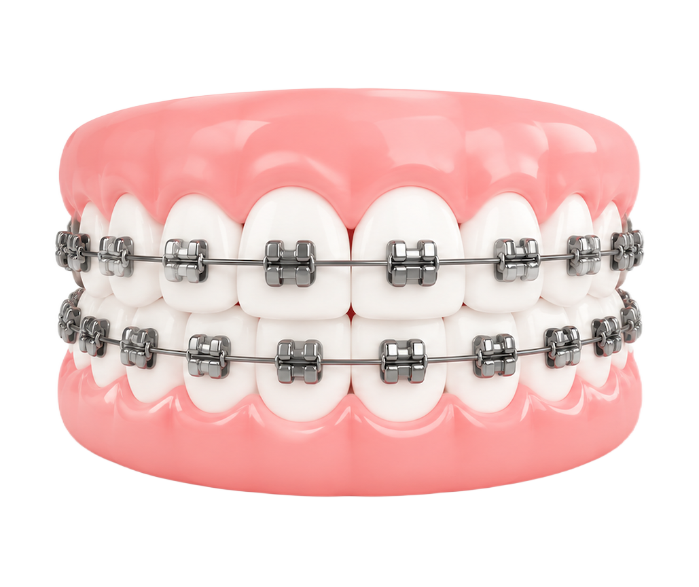
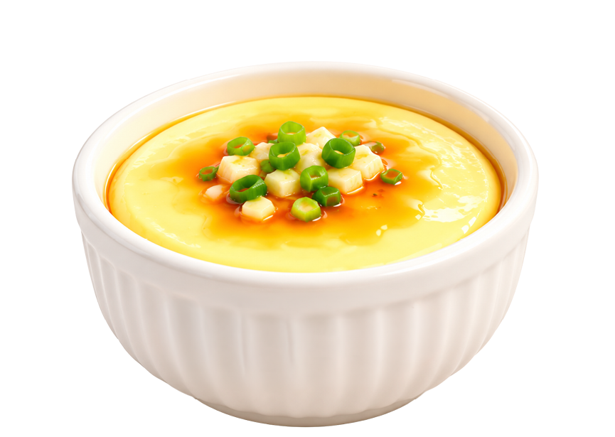
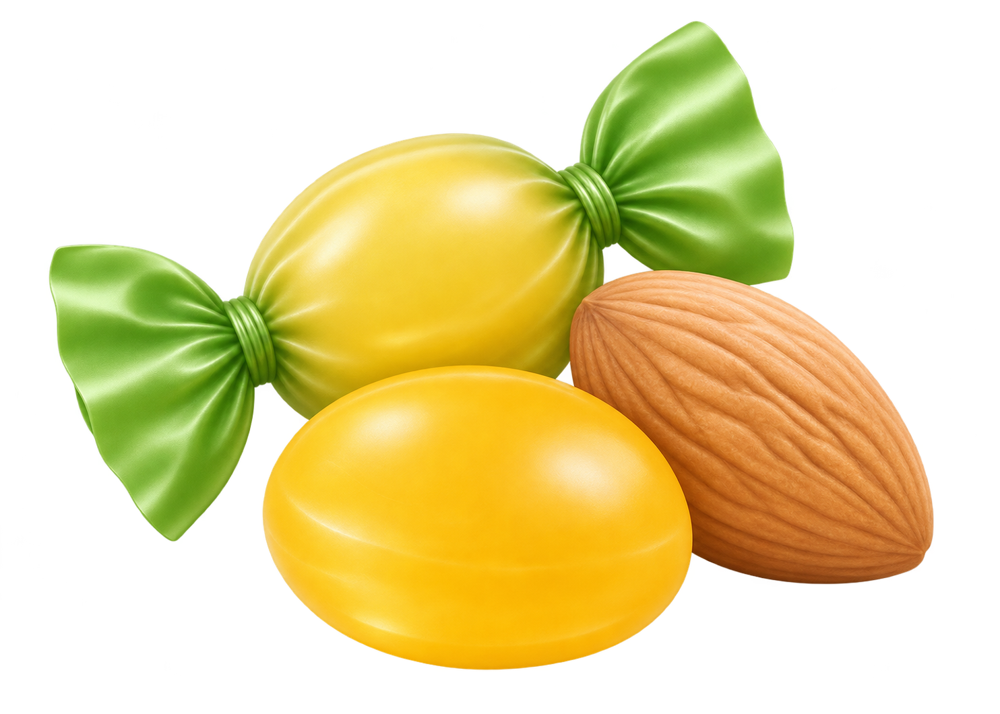
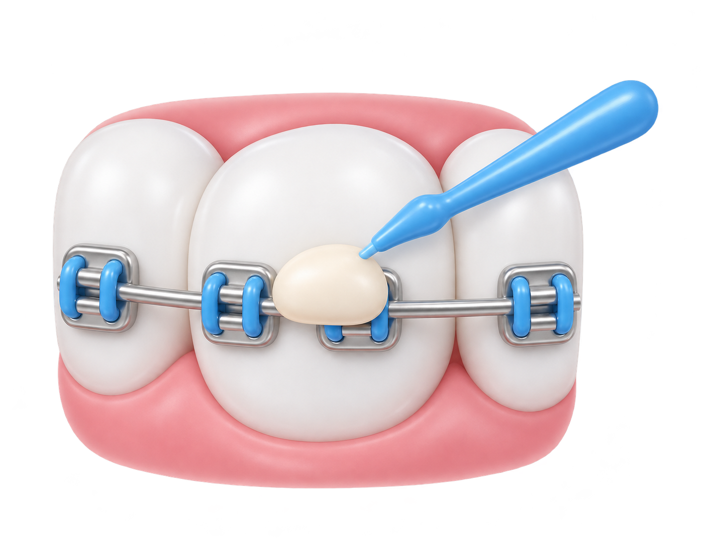
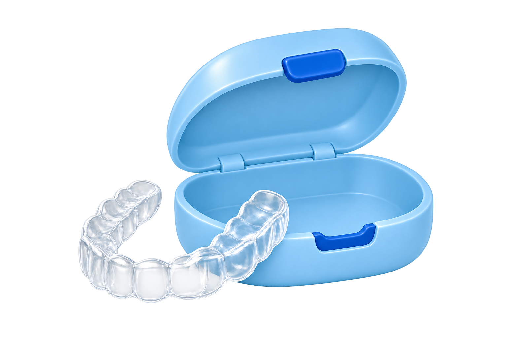

矯正前，先看懂代價
打造完美笑容的安心法則
美麗的笑容，已成為現代人的必要投資？
剛升國一的小育因門牙微凸，主動提出矯正，隱形牙套要價23萬元；謝媽媽的孩子8歲便接受隱形矯正，花了10多萬元。金曲歌后孫淑媚也分享變美經歷：拔了7顆牙、接受矯正。從孩子到成人，改造笑容帶動一門「燦笑」商機。衛福部「108～109年度兒童及青少年口腔健康調查」發現，每3名高中生，就有1人覺得自己需要矯正（33.7％）。
但變美之路也可能成為一場補救戰。29歲康小姐透過牙套廠商線上評估，再媒合牙科診所，一次付清12.4萬元、拔了4顆牙，卻等不到下一批隱形牙套。廠商與診所互踢皮球，她只能和其他病人組成自救會，為後續治療與求償奔波。
牙齒矯正是一段需要時間與金錢配合的醫療過程。隱形牙套和傳統矯正怎麼選？一定要拔牙嗎？費用、風險與後續維持該注意什麼？《康健》帶你看懂療程，找到適合自己的笑容改造計劃，降低消費風險。
註 1: 數位新媒體「台灣好醫生」2026 年第 1 季牙科自費療程網路關注度調查。
註 2: 翔評互動（AlleyPin）針對 618 名 45 歲以上民眾的調查。
註 3: 統一超商《2026 Q1 財務簡報》：2025 年 7-ELEVEN 共 7,248 家。
傳統矯正VS隱形牙套？選對比價格更重要
隱形牙套美觀、可拆取，但療程時間通常比較久且極度仰賴自律；傳統矯正外觀雖然比較明顯、初期可能有摩擦疼痛，卻較能處理複雜且困難的牙齒移動，療程也比較快速。

- 配戴外觀
- 較明顯，可能產生摩擦感
- 治療費用
- 全口約 10～20 萬元
- 口腔清潔
- 無法拆下，須搭配牙間刷、牙間穿引器等工具
- 牙齒移動
- 控制度高，能處理複雜移動
- 回診安排
- 較頻繁，約每月一次
- 療程時間
- 較短
- 適用情況
- 適用範圍較廣，包括複雜病例
| 比較項目 |
傳統矯正
|
隱形牙套
|
|---|---|---|
配戴外觀 | 較明顯，可能產生摩擦感 | 透明、表面平滑不刮肉 |
治療費用 | 全口約 10～20 萬元 | 全口約 20～40 萬元 |
口腔清潔 | 無法拆下 須搭配牙間刷、牙間穿引器等工具 | 可拆下 刷牙與使用牙線較方便 |
牙齒移動 | 控制度高，能處理複雜移動 | 拉力溫和，牙齒移動較受限制 |
回診安排 | 較頻繁，約每月一次 | 回診間隔較長 |
療程時間 | 較短 | 較長 |
適用情況 | 適用範圍較廣，包括複雜病例 | 多用於輕至中度病例 |
備註：實際費用、療程時間及適用方式，會因病例難度、治療計劃及醫療院所而異，皆須由專業醫師個別評估。
日常飲食、清潔、受傷護理一次看
牙齒矯正期間，日常飲食習慣與口腔清潔至關重要。做好照護能避免蛀牙、脫鈣與托槽脫落，讓療程如期順利完成。
戴牙套怎麼吃東西？
建議這樣吃
- 疼痛期選擇柔軟且有營養的食物（如蒸蛋、豆腐、稀飯）。
- 維持均衡飲食，避免因疼痛長期只吃流質食物導致營養失衡。
- 太硬的食物（如芭樂、蘋果）請切小塊，細嚼慢嚥。

圖片預留位置daily-care-food-soft.png
應避免的習慣
- 避免太硬（如堅果、甘蔗）或太黏（如麥芽糖、牛軋糖）的食物。
- 避免太甜且容易殘留在矯正器縫隙的食物，降低蛀牙風險。
- 避免直接用門牙大力啃咬食物，以免矯正器脫落。

圖片預留位置daily-care-food-avoid-v2.png
戴牙套怎麼刷牙、維持口腔清潔？
矯正期間要做好清潔，並定期 3～4 週回診檢查，避免牙齒排列整齊了，卻留下蛀牙或牙周病。
基本工具
牙刷、牙間刷、
矯正專用牙線
輔助工具
搭配含氟牙膏，依牙醫師
建議使用其他含氟產品。
 圖片預留位置
圖片預留位置daily-care-cleaning-tools-selected.png?v=219
傳統矯正器潔牙 3 步驟
- 牙刷分區刷
牙套靠牙齦側、牙套本身及靠咬合面側，都要刷到。
- 牙間刷補強
清潔牙縫與鋼線周圍。
- 牙線清牙縫
用穿引器將牙線穿過鋼線，清潔相鄰牙面。
矯正器刺到口腔黏膜怎麼辦？

找出刺痛處
看看是否有綁線頭突出，或矯正鋼線末端太長。
蓋上矯正白蠟
蓋住突出處，減少摩擦。
傷口擦口內膏
依醫師或藥師指示使用。
仍痛就回診
若無法處理或持續疼痛，盡快回診請牙醫師調整。
拆掉牙套≠療程結束，如何守住矯正效果？
拆掉牙套後，牙齒仍可能移位。想維持成果，要注意 5 件事：
勤戴維持器
依醫師指示配戴維持器（固定式或活動式），別自行停戴。
清潔維持器
活動式維持器應定期清洗，不戴時放進專用盒。
定期回診
追蹤齒列與咬合，尤其仍在發育的孩子。
留意復位
牙齒可能被牙周韌帶拉回原位，或其他因素導致復位，額外處置須由醫師評估。
改掉不良習慣
例如舌吞嚥、吸手指等不良習慣，矯正後應配合改正。
